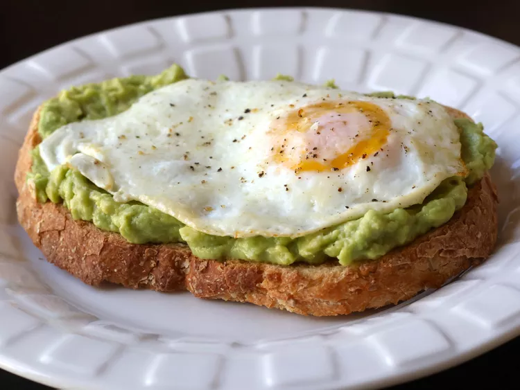

Avocado Toast
Home

Avocado toast is a simple yet delicious dish featuring creamy mashed or sliced avocado spread over toasted bread, often seasoned with salt, pepper, and a drizzle of olive oil. It can be topped with extras like poached eggs, tomatoes, feta cheese, or chili flakes, offering a perfect balance of crunch, richness, and freshness. A popular choice for breakfast or brunch, avocado toast is both satisfying and packed with nutrients.
Ingredients
-
1 Teaspoon Butter
-
2 Eggs
-
2 Slices Multigrain Bread
-
1 Pinch of Pepper
-
Sea Salt to taste
-
Ground Black Pepper to taste
Steps
-
Melt butter in a skillet over medium-low heat. Crack eggs into the skillet side by side and cook until eggs are white on the bottom layer and firm enough to flip, 2 to 3 minutes. Flip eggs, trying not to crack the yolk, and cook until egg reaches desired doneness, 2 to 5 minutes more.
-
Meanwhile, toast bread slices to desired doneness, 3 to 5 minutes.
-
Mash avocado in a bowl; stir in lemon juice, cayenne pepper, and sea salt. Spread avocado mixture onto toast. Top with fried egg and season with sea salt and pepper.